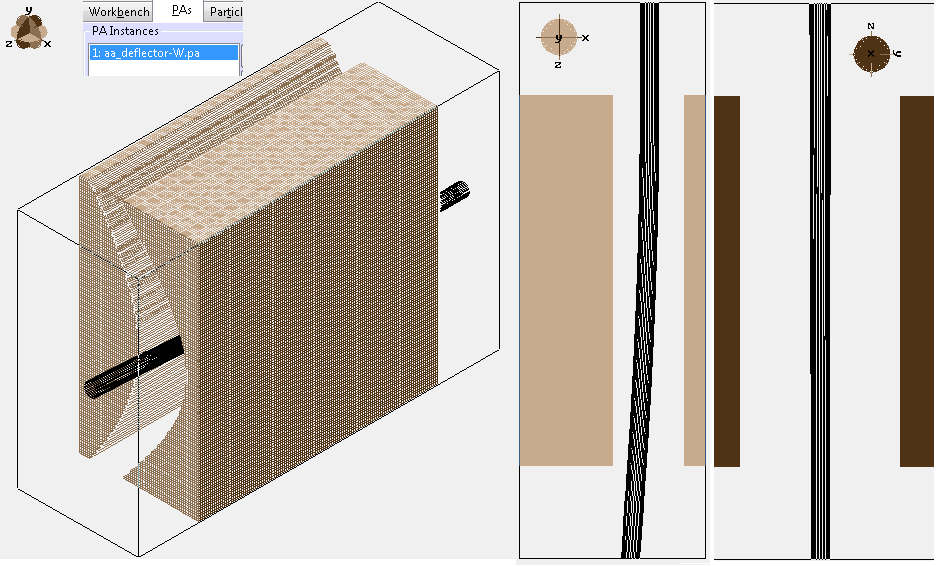
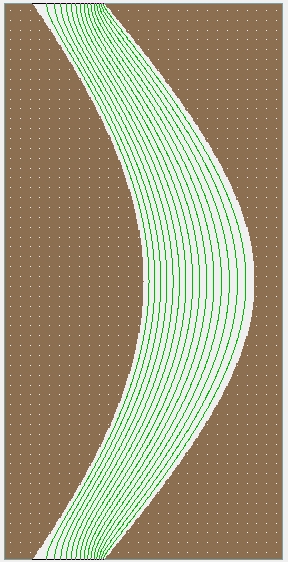
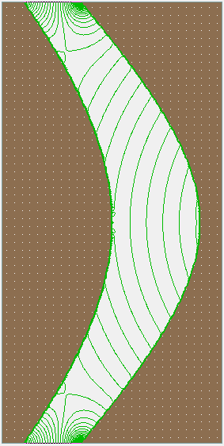

Note: The files in this example are only included in SIMION 8.2 early access.
Purpose
These examples illustrate using SIMION to simulate beams of neutral (but polar) molecules in inhomogenous electric (or magnetic) fields. Normally, in SIMION, particles experience a force F = q E = -q grad φ (Lorentz force law), assuming particles are point charges q, so a neutral particle will experience no force. However, if a neutral particle has a dipole μ, it should experience a force F = μ grad |E| for a dipole moment μ. μ may be constant or be a function of |E|. Another way to express this is in terms of a Stark potential at a point r being U(r) = -μ ⋅ E(r), where the negative gradient of that is the force. For simplicity, we might assume to an approximation that μ and E always point in the same direction. See the References section below for more details and background.
There are two approaches we might handle such molecular beams in SIMION:
Method #1: The first method is to take a refined SIMION potential array (PA) and replace all the potentials (φ) stored inside it with the value -|E|, and in the particle definitions input μ where SIMION expects q. Then have SIMION calculate particle trajectories in the usual way. Note that SIMION PE/contour functions will also then display contour lines for |E| rather than φ. This approach quite straightforward, and it's the approach currently taken in the example "aa_deflector.iob".
Method #2:
The second method is to leave the SIMION potential array unaltered but use an accel_adjust user program
segment (used during particle flying) to replace the acceleration vector (a) seen by the particles with the
acceleration according to the equation a = F/m = (μ/m) grad |E|.
Note that SIMION PE/contour functions will still display contour lines for φ, but you may use
the "Gradient" option on the Contour tab to plot contour lines for |E|.
This approxh is taken in the example "aa_deflector_accel_adjust.iob".
Files in this Example
- README.html - description of this example
- aa_deflector.iob - Example using method #1
- aa_deflector_stark_build.lua - Builds array of Stark potentials. This in turn also calls aa_deflector_build.lua.
- aa_deflector-W.pa - array of Stark potentials, created by aa_deflector_stark_build.lua
- aa_deflector.fly2 - particle definitions. Note: charge is really a dipole in units of Debye.
- aa_deflector_accel_adjust.iob - Example using method #2
- aa_deflector_build.lua - Build and refines PA with specially shaped electrodes.
- aa_deflector.pa - potential array, created by aa_deflector_build.lua
- aa_deflector_accel_adjust.lua - workbench user program that applies forces on dipole particles based on local gradients of the electric field.
- aa_deflector_accel_adjust.fly2 - particle definitions. Note: charge is really a dipole in units of Debye.
- octupole.iob - Example of using RF potentials
Molecular Beam Deflector (aa_deflector.iob)
de Nijs and Hendrick [2] and van de Meerakker et al [1] describe the deflection of a molecular beam using a multipole electric field ("AA geometry") with parameters φ0 = 10 kV, r0 = 1.7 mm, a1 = 1, and a2 = -0.2. Such a field can be formed by two appropriately shaped electrodes whose surfaces align to two different equipotential contour lines on this field. This field should deflect particles substantially in the X direction and little in the Y direction. This is confirmed in the "aa_deflector.iob") example shown below:

Figure: (left) 3D image of deflection electrodes and beam running through it. (center) XZ cross sectional view of beam, showing deflection in X direction. (right) YZ cross sectional view of beam, showing minimal deflection in Y direction.


Figure:: (left) Contour lines for potential φ (Using SIMION Contours tab on aa_deflector.pa) (right) Contour lines for |E| (Using SIMION Contours tab on aa_deflector-W.pa)
The replacement of potentials φ with values |E| in the potentials arrays is done with a small batch mode Lua program (see "aa_deflector_stark_build.lua"):
-- dipole moment, assume normalized (1 e)*(1 mm) local mu = 1 local pa2 = simion.pas:open() pa2:load 'aa_deflector.pa' for xg,yg,zg in pa2:points() do local Ex,Ey,Ez = pa:field_vc(xg,yg,zg) -- V/gu local Ex,Ey,Ez = Ex/pa.dx_mm, Ey/pa.dy_mm, Ez/pa.dz_mm -- V/mm local E = math.sqrt(Ex^2 + Ey^2 + Ez^2) -- V/mm local W = - mu * E -- potential local ele = pa:electrode(xg,yg,zg) pa2:point(xg,yg,zg, W, ele) end pa2.refined = true pa2.refinable = false pa2:save 'aa_deflector-W.pa'
This loads the original refined potential array ("aa_deflector.pa"), and creates a new potential array ("aa_deflector-W.pa") that has the potentials replaced. This batch mode program only needs to be executed once prior to loading the simulation. Notice in the SIMION workbench (PAs tab), that the aa_deflector-W.pa rather than the original aa_deflector.pa is loaded on the the workbench.
In this example, the deflector electrodes have a complex analytical shape (although in practice you might simplify their shape to allow easier machining). The aa_deflector_build.lua defines that analytic shape as well for convenience using the special code below, but you could use other more standard methods (or even CAD import) if you wish.
-- Define PA size.
local pa = simion.pas:open()
pa.symmetry = '2dplanar[y]'
pa:size(1001, 1001, 1)
pa.dx_mm, pa.dy_mm, pa.dz_mm = 0.01, 0.01, 0.01 -- mm per grid unit
-- Analytic expression that defines multipole field boundary.
local function make_multipole(phi0, r0,a1,a2,a3)
return function(x,y,z)
x = x / r0
y = y / r0
return phi0*(a1*x + (a2/2)*(x^2-y^2) + (a3/3)*(x^3-3*x*y^2))
end
end
local multipole = make_multipole(10000, 1.7, 1.0,-0.2,0)
-- Determine potentials of two electrode surfaces.
local phia = multipole(-2,0,0)
local phib = multipole(2,0,0)
print(phia, phib)
-- Set boundary points.
for xg,yg,zg in pa:points() do
local x,y,z = xg*pa.dx_mm-7, yg*pa.dy_mm, zg*pa.dz_mm
local phi = multipole(x,y,z)
local phi = (phi <= phia and phia or phi >= phib and phib or 0)
local ele = (phi ~= 0)
if ele then pa:point(xg,yg,zg, phi, ele) end
end
pa:refine { convergence = 1e-5 }
pa:save 'aa_deflector.pa'
Molecular Beam Deflector (aa_deflector_accel_adjust.iob)
The "aa_deflector_accel_adjust.iob" example is similar to the previous one but takes a different approach: it redefines the acceleration vector observed by the particle rather than redefining the potential energy observed by the particle. Below is what the "accel_adjust" segment, which redefines the acceleration vector, looks like.
simion.workbench_program()
local C = require 'simionx.Constants'
-- Electric field vector magnitude. V/mm.
local function Emag(x,y,z)
local Ex, Ey, Ez = simion.wb:efield(x,y,z)
return Ex and math.sqrt(Ex^2 + Ey^2 + Ez^2) or nil
end
function segment.accel_adjust()
-- F = mu grad |E| and F = M * a.
-- Therefore, a = (mu/M) grad |E|.
-- Dipole moment mu in Debye (D) is stored in the ion charge field.
local mu = ion_charge
-- (mu/M) in units of mm^3 usec^-2 V^-1.
local conv =
mu -- D
/ ion_mass -- u^-1
* (1/299792458)*1E-21 -- (C*m/D) ...convert D to C*m
/ C.UNIFIED_MASS_KG -- kg^-1/u^-1 ...convert u to kg
-- (m^3 s^-2 V-1)/(C m kg^-1) = 1
* 1E+9 -- (mm^3/m^3)
* 1E-12 -- (usec^-2/s^-2)
-- Gradients of electric field in units of V mm^-2.
local dEx, dEy, dEz -- V mm^-2
local x,y,z = ion_px_mm, ion_py_mm, ion_pz_mm -- mm
local d = ion_mm_per_grid_unit -- mm
local Exp = Emag(x+d,y,z) -- V mm^-1
local Exm = Emag(x-d,y,z)
local Eyp = Emag(x,y+d,z)
local Eym = Emag(x,y-d,z)
local Ezp = Emag(x,y,z+d)
local Ezm = Emag(x,y,z-d)
if Exp and Exm and Eyp and Eym and Ezp and Ezm then
dEx = (Exp - Exm) / (2*d) -- V mm^-2
dEy = (Eyp - Eym) / (2*d)
dEz = (Ezp - Ezm) / (2*d)
end
if dEx then -- defined
-- Replace acceleration vector.
ion_ax_mm = conv * dEx -- mm usec^-2
ion_ay_mm = conv * dEy
ion_az_mm = conv * dEz
else
ion_ax_mm, ion_ay_mm, ion_az_mm = 0,0,0
end
end
To use this example:
- Click "Run Lua Program" on the SIMION main screen and select "aa_deflector_build.lua" to create and the refine the potential array. Th only reason for a Lua program here is due to the specially shaped electrode surfaces.
- Click "Remove All PAs from RAM", click View/Load Workbench, and select the "aa_deflector_accel_adjust.iob" example. Click Fly'm to run.
RF example (octupole.iob)
This is an example of using RF voltages with dipole beams. It is merely a proof of concept of the mechanism to simulate this. TODO: is the assumption that the dipole moment parallel to the electric field correct in this RF case?
Future Work
Additional examples from [1] may be added here later (e.g. focusing and decelleration systems)
More Notes
Building the "*-W.pa" file
Before you run anything like "aa_deflector_stark_build.lua", make sure that the potentials in "aa_deflector.pa" (or aa_deflector.pa0) are not everywhere zero. The process you need to do is basically this:
- Create your PA or PA# file.
- Refine the PA or PA# file. If using a PA# file, this creates the refined .PA0 array.
- Fast Adjust the PA or PA0 array to the desired potentials. (You should see potentials when viewing this array in PE view.)
- Save the PA or PA0 array to disk again (after doing Fast Adjust).
- Run the "aa_deflector_build.lua". This generates the "*-W.pa" array file.
- You should now see non-zero potentials in "*-W.pa" array file. The potentials may, however, be small. If necessary, Increase the "Relief" value on the PE/Contours tab to change the vertical scaling. You may also plot potential contour lines by clicking the "Auto:" button (after setting the field to the right of "Auto:" to the number of contours you want to plot). If you still see no potentials, examine the potentials displayed in the bottom status bar when you hover your mouse over the View screen (or the Modify screen).
Question: What do these mean in the Lua code? local ele = pa:electrode(xg,yg,zg) pa2:point(xg,yg,zg, W, ele)
The "pa:electrode(xg,yg,zg)" queries the potential array "pa" for the electrode state (true or false) at the PA grid point coordinate (xg,yg,zg). "true" means electrode point and "false" means non-electrode point. "pa2:point(xg,yg,zg, W, ele)" sets the potential (W) and electrode state (ele) at PA grid point coordinate (xg,yg,zg) in the potential array "pa2". So, for the following code:for xg,yg,zg in pa2:points() do local Ex,Ey,Ez = pa:field_vc(xg,yg,zg) -- V/gu local Ex,Ey,Ez = Ex/pa.dx_mm, Ey/pa.dy_mm, Ez/pa.dz_mm --V/mm local E = math.sqrt(Ex^2 + Ey^2 + Ez^2) --V/mm local W = - mu*E --potential local ele = pa:electrode(xg,yg,zg) pa2:point(xg,yg,zg, W, ele) end
what this is basically doing is traversing every point (xg,yg,zg) in the potential array. For each point it reads the field at that point (pa:field_vc(xg,yg,zg)) and the electrode state at that point (pa:electrode(xg,yg,zg)) in the original array (pa). It computes the special potential "W" from that field. Finally it writes "W" and "ele" values into the new array (pa2).
What the *-W.pa file contains
Note the difference between example.pa0 and example-W.pa:
- example.pa0 contains the actual electrostatic potentials (phi) in Volts. Its electric field is E = -grad phi. For particles in this field, SIMION normally applies a "Lorentz force law" force F = q E = -q*grad phi, assuming that particles are point charges (*not dipoles*) of charge q.
-
example-W.pa doesn't contain real electrostatic potentials.
Rather, it contains "fake" values (phi') of those potentials defined in such a
way to trick SIMION so that SIMION's applied Lorentz force
F = -q' grad phi' on particles of fake charge q' ends up being equivalent
to the real forces F = mu*grad|E| seen by neutral dipoles of dipole moment mu.
If we equate these two expressions for F:
F = -q'*grad phi'
F = mu*grad |E|we see that we should define the fake potential as phi' = |E| and the fake charge as q'=-mu. As long as we enter those fake values into SIMION, the particles, should experience the correct forces and trajectories. We see this in the code:
local W = - mu*E --potential
Indeed, this does make any attempt to fast adjust the example-W.pa array more confusing because this array contains values of phi' not phi. Note, however, that phi' is proportional to |E| which in turn is proportional to phi. So, if you multiply phi' by some factor, this is equivalent to multiplying phi by the same factor. However, please also note that there are two possible ways to handle molecular beams, as described by "method #1" and "method #2" in the "molecular_bream\README.html" file. Method #1 replaces phi with phi'; Method #2 does not. Therefore, method #2 does not involve any added complications during Fast Adjust like method #1 does.
References
- [1] van de Meerakker, Sebastiaan Y. T.; Bethlem, Hendrick L.; Vanhaecke, Nicolas; Meijer, Gerard. Manipulation and Control of Molecular Beams. Chemical Reviews. 2012. doi: 10.1021/cr200349r
- Wikipedia:Molecular beam
- [2] de Nijs, drian J.; Bethlem, Hendrick L. On deflection fields, weak-focusing and strong-focusing storage rings for polar molecules. Physical Chemistry Chemical Physics. volume 13, issue 42, year 2011, pp. 19052|. http://arxiv.org/abs/1105.1913v1 | doi:10.1039/c1cp21477b
See Also
- Wikipedia: Dielectrophoresis - force on a neutral dielectric particle in non-uniformed E-field.
- Jones, Thomas B. Basic Theory of Dielectrophoresis and Electrorotation http://www.ece.rochester.edu/~jones/EMBS.pdf. IEEE Engineering in Medicine and Biology Magazine. 0739-5175/03/2003. Nov/Dec 2003. pp. 33-42.
Changes
- 2013-02-27: Add octupole.iob. Split aa_deflector_build.lua into two files.
- 2013-02-20: Updates IOB's to reproduce Figure 3 in de Nijs et al. Clean up aa_deflector_accel_adjust.lua code more.